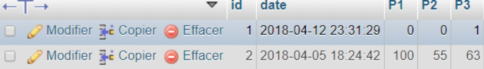
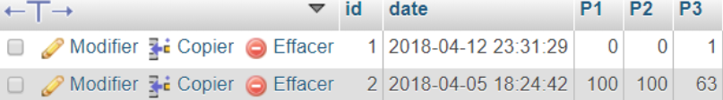

Curriculum Vitae
Guillaume GERARD
Guillaume GERARD
Mon projet en terminal STI2D était de modéliser un parking connecté qui consistait à avoir une base de données actualisée en temps réel des places occupées ou non et de les afficher sur un écran à l’entrée du parking symbolisé par ce site WEB
Comme par exemple ici, il restait 45 places disponibles, et 218 places étaient occupées pour un total de 263 places disponibles
Et enfin, ici toutes les places étaient occupées